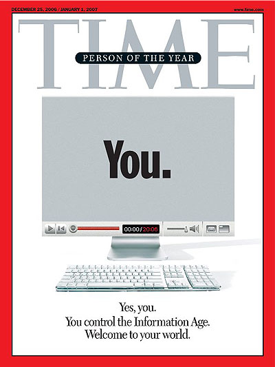

Letramento Digital
como utilizar o YouTube?
Aula 4
Todo fim é um novo começo!
Momento 1 [5min]
Apresentações
Despedida das apresentações!
Gui e Amanda,
muito prazer!
Quem somos nós?
- Relembre o seu nome.
- Algo que gostou de ter aprendido.
Momento 3 [5min]
Sobre o curso
O que temos para hoje?
Relembrando
- Se não entender, pode perguntar!
- Ouça os colegas com atenção.
- Atitude positiva ao aprender!
- Ensine a aprenda com colegas.
Hoje!
- Fazendo parte dessa rede de criadores.
- Navegação segura, golpes e fake news.
+ Prática!
- Controles avançados,
- Utilizando nosso canal.
Momento 3 [5min]
Saberes Coletivos
Anúncios e criação de canais
Anunciante
Alguma empresa que está querendo nos vender algo.
Por detestamos
os anúncios?
- Não sabemos de onde vem.
- São indesejáveis.
- Geram um anti-clímax.
- Mas há coisas interessantes!
Tema de Hoje:
Criar canais do YouTube
Quais os maiores desafios
na criação de um canal?
E o que seria mais fácil
na criação de um canal?
Momento 4 [5min]
Revisão Aula 1
Letramento + Web2.0 + YouTube
Aula 1
Linha do Tempo Internet
- 1986: 5.000 computadores
- 1991: Web 1.0 (primeiros sites)
- 1997: Letramento Digital
- 2005: Web 2.0 (redes sociais)
- 2019: Como estamos?
1986
Quem estava conectado?
Centros de Inteligência
Universidades
Agências de Tecnologia
Empresas de Tecnologia
Empresas de Tecnologia
1991
Primeiros websites
1997
Letramento Digital

1997
2005/6
Sites dinâmicos e interativos
Redes Sociais / Web 2.0
www.youtube.com.br
- 2005: Fundado por 3 amigos.
- 2006: Vendido à Google por US$1.65bi.
Pessoa do Ano da Revista Time
2019
A Internet está em tudo!
YouTube
- 80 mil vídeos assistidos por segundo.
- Quase tudo está no Youtube!
Momento 5 [5min]
Revisão Aula 2
Modelo Financeiro + Canais
O que a mídia vende?
A mídia vende anúncios.
Quem são os seus clientes?
São os anunciantes.
Resumindo
O Burger King paga a Globo.
Em outras palavras
"Se você não paga pelo produto, o produto é você"
Quanto mais espectadores,
mais caro o comercial!
Produção de Conteúdo
Como o YouTube
ganha dinheiro?
#1 Anúncios

#2 Assinatura

Porém
O YouTube não produz seu conteúdo.
Quem produz?
Regra Básica
Quem é muito assistido, recebe dinheiro.
Chuva sem anúncios
Chuva com anúncios
Conclusão
Todo mundo quer ser visto,
... para poder ganhar dinheiro,
... por isso, há tanto conteúdo!
YouTuber
- Quem possui um canal no Youtube.
- Quem apresenta nesse canal.
- Quem ganha dinheiro esse canal.
Estudos de Casos
Um passeio exploratório.
Manual do Mundo
Drauzio Varella
JoutJout [1]
JoutJout [2]
Whindersson Nunes
Porta dos Fundos
Momento 6 [5min]
Revisão Aula 3
Youtube nas mídias, mídias no Youtube
Do Youtube para...
- Anúncios publicitários
- Telas da televisão
- Salas de palestras
- Prateleiras de livrarias
Manual do Mundo
JoutJout
Whindersson Nunes
Porta dos Fundos
Por que a grande mídia gosta dos Youtubers?
- Capacidade de comunicação.
- Atração de público.
- Conteúdos e assuntos.
- Manter-se atualizada.
Drauzio Varella
Por que o Drauzio Varella foi parar no YouTube?
- Aumentar seu alcance e fama.
- Promover inclusão digital e social.
- Divulgação de informações.
Celso Portiolli
Adriane Galisteu
Marília Gabriela
Gilberto Barros
Xuxa
Rádio Jovem Pan
Conclusão
As redes sociais são lucrativas e podem gerar negócios. Por isso, todos querem estar nela!
Atividade
Se você criasse um canal
no Youtube, como ele seria?
Considerações
- Tema, Relevância
- Formato, Cenário
- Público, Frequência
Reflexões? Pensamentos?
Gostaram das atividades?
Momento 7 [15min]
Teoria [1/3]
Medo, não! Cuidado, sim!
Mundo online é real!
Atenção e cuidado!
Regra #1
Quando parece ser bom
demais para ser verdade,
é porque não é verdade!
Versão Vídeo
Regra #2
Dentro do Youtube,
você está seguro/a.
Pense antes de sair dele.
Links Seguros
Links Inseguros
Regra #3
Esteja sempre ciente da fonte.
Confie em quem for confiável.
Fake News
Deep Fake
Momento 8 []
Prática Guiada
Criando nosso canal
Participação ativa
na comunidade Youtube
Passo #1
Criando um usuário
Anote seu usuário e senha!
Ter um canal é poder...
- Ter um histórico de vídeos
- Criar listas de vídeos
- Salvar vídeos para mais tarde
- Comentar vídeos
- Inscrever-se em canais
- Avaliar vídeos ("joinha")
- Incluir seus próprios vídeos
Passo #2
Gravando um vídeo
Por que você acha importante
aprender a utilizar o Youtube?
Resultados
Passo #3
Enviar o vídeo
Título: Letramento Digital por [SEU NOME]
Passo #4
Compartilhar o vídeo
Momento 9
Prática Guiada
Enquanto gravamos... Mais vídeos!
Atividade TV Cultura
- Vocês encontram o vídeo!
- Nós assistimos juntos.